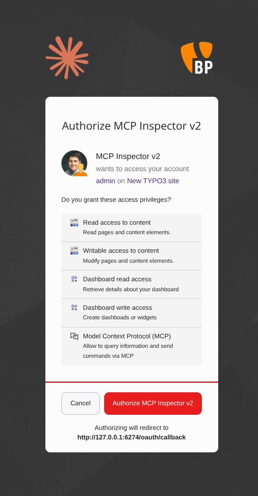
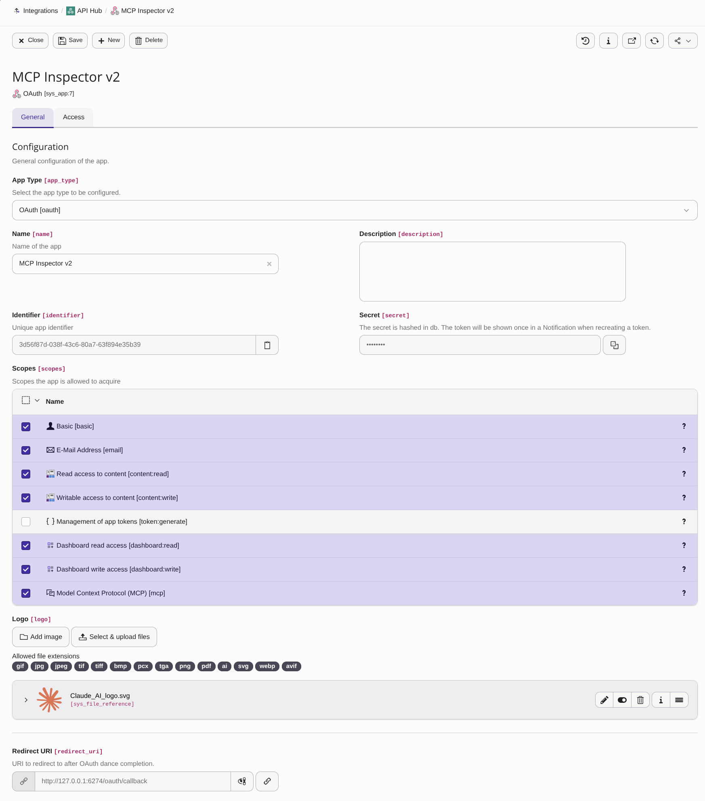
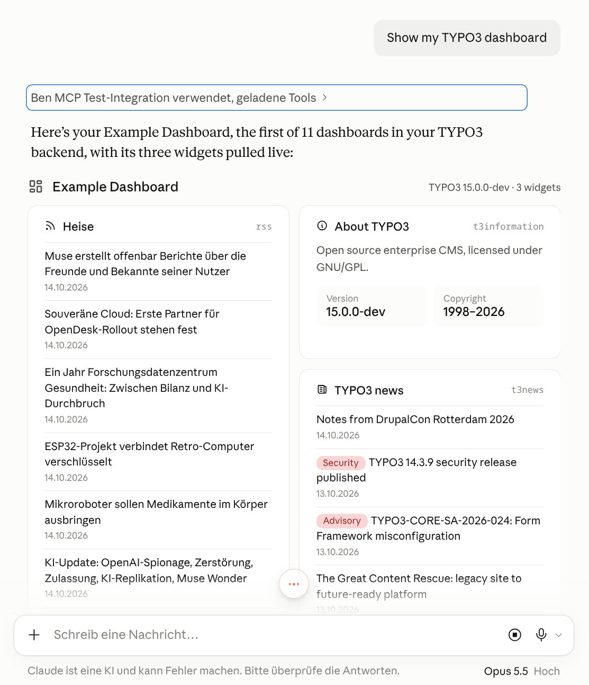
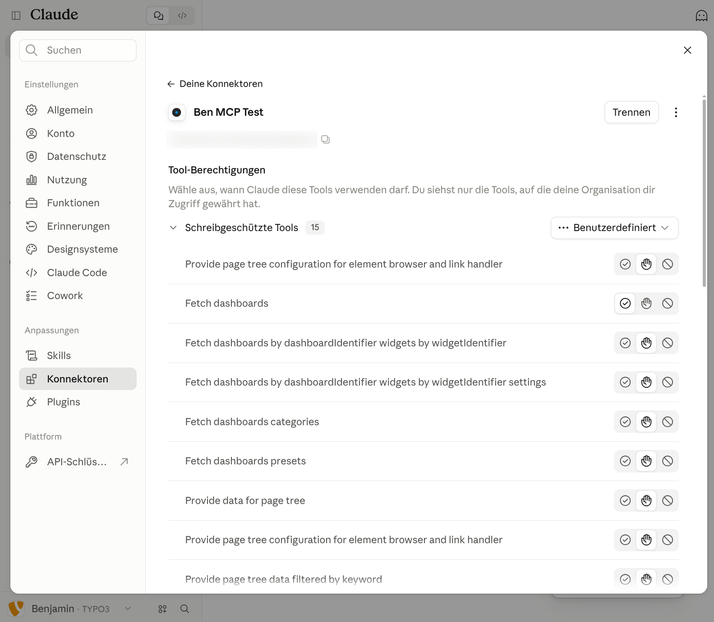
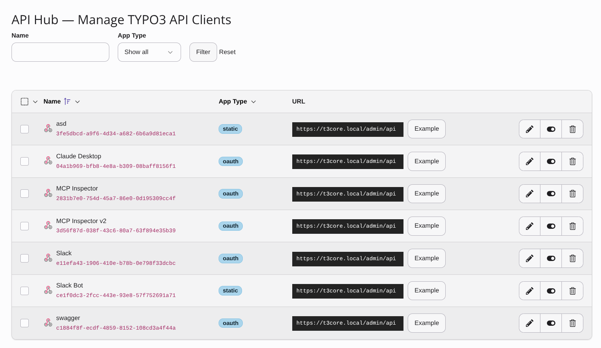
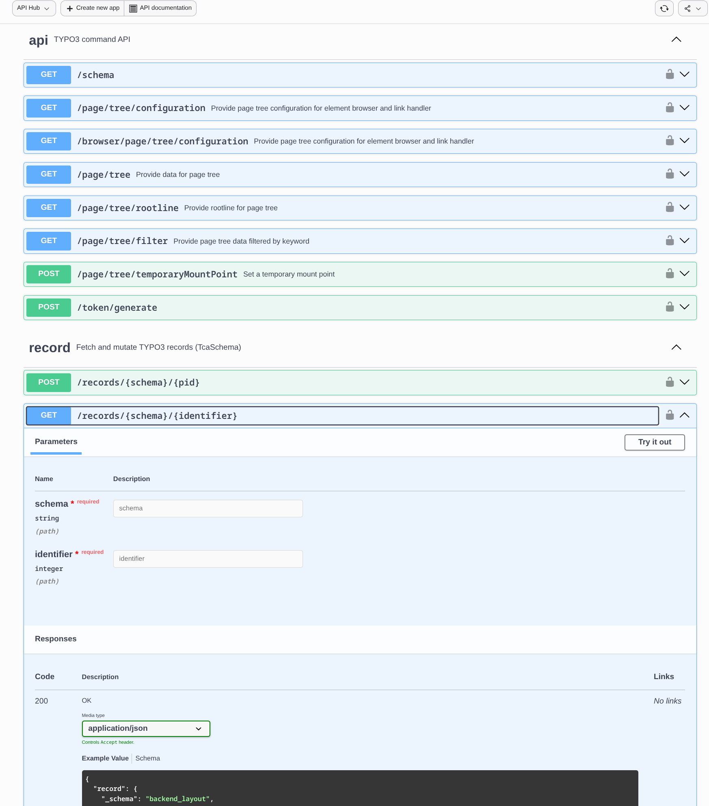
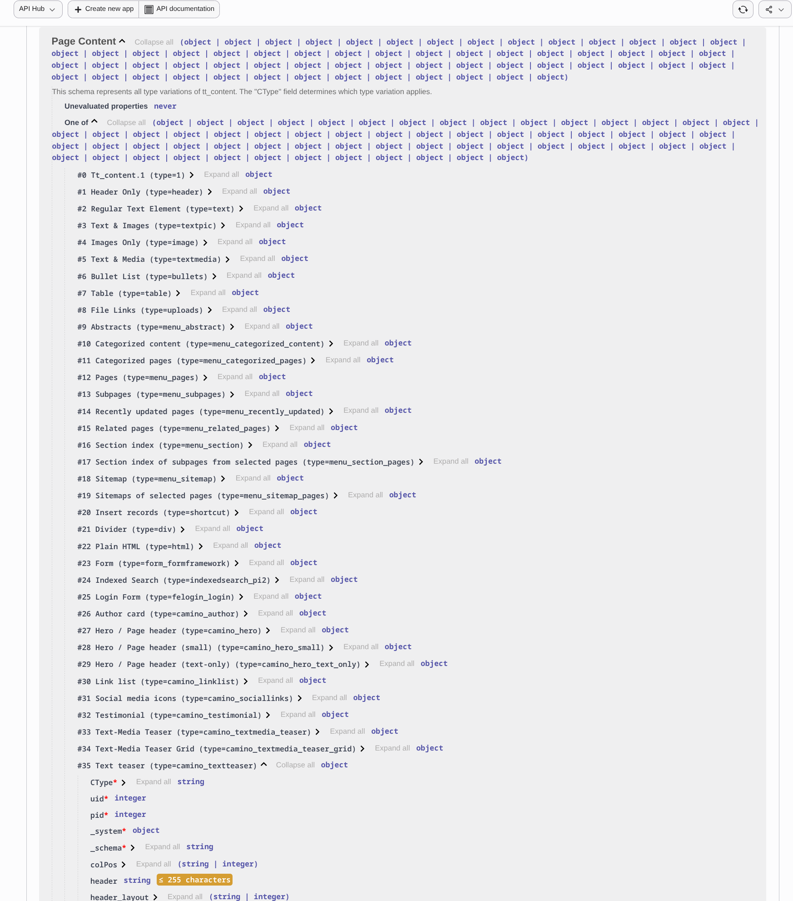

The Action API turns a typed PHP method into a feature that the TYPO3 backend, external applications and AI agents can use: validated, documented and secured, without writing a single controller.
#[AsAction( type: ActionType::fetch, name: 'my-extension/page/{uid}/titles', summary: 'Fetch the titles of a page', scopes: [ContentReadScope::class], )] public function titles(int $uid): array { // your business logic }
Today, every way of talking to TYPO3 is built separately. The Action API replaces these islands with one consistent model.
Each controller parses arguments, validates them and formats errors in its own way.
One generic dispatcher. Arguments and results are validated against a schema derived from the method signature.
Integrations depend on extensions that each build and maintain their own endpoints.
Every action is an HTTP endpoint below /typo3/api/, provided by TYPO3 and extensions alike.
API keys, OAuth and fine-grained permissions are built again for every connection.
EXT:hub offers OAuth 2.0 and static tokens. Scopes limit apps; the user's permissions always apply.
Endpoints are documented by hand, if at all, and the documentation drifts from the code.
An OpenAPI 3.1 document is generated from the code and browsable in Swagger UI.
There is no safe, standard way for assistants to read or change content on behalf of an editor.
A built-in MCP server offers actions as tools. Agents act as the user, limited by the granted scopes.
Backend UI, integrations and automation each need their own glue code.
Write the feature once. Every channel is available automatically.
An action is a public method of a service, marked with the #[AsAction]
attribute. Its signature is the contract: TYPO3 derives everything else from it,
once, when the dependency injection container is compiled.
final readonly class PageTitleAction { /** * @return list<string>7 * @throws NotFoundError if the page does not exist8 */ #[AsAction( type: ActionType::fetch1, name: 'my-extension/page/{uid}/titles'2, summary: 'Fetch the titles of a page'3, scopes: [ContentReadScope::class]4, )] public function titles( int $uid5, ActionContext $context6, ): array { // … throw new NotFoundError('Page not found', 1791975434); } }
fetch → GET, create → POST, replace → PUT, update → PATCH, delete → DELETE, dispatch → POST. Also sets MCP hints such as “read-only”./typo3/api/my-extension/page/{uid}/titles. Becomes the MCP tool fetch_my_extension_page_by_uid_titles.list<string> or array shapes become the output schema. The result is validated before it is returned.@throws. NotFoundError becomes a documented 404, PermissionDeniedError a 403.The example action above, as each consumer sees it. Nothing on this list requires additional code.
Backend modules call actions through a small client. It adds the bearer token bound to the logged-in user, so a session cookie alone is never enough.
import { action } from '@typo3/core/action/request.js'; const response = await action('/my-extension/page/{uid}/titles', { uid: '42' }).get(); const titles = await response.resolve();
External applications use the same endpoint with a token from EXT:hub. Declared errors arrive with their status code.
curl -H 'Authorization: Bearer <token>' \ https://example.org/typo3/api/my-extension/page/42/titles # 200 OK ["Home", "Startseite", "Accueil"] # 404 Not Found {"error": "Page not found"}
Excerpt of the generated OpenAPI 3.1 document at /typo3/api/schema, shown in Swagger UI in the backend.
/my-extension/page/{uid}/titles: get: summary: Fetch the titles of a page security: - oauth2: ['content:read'] - static: [] - beuser: [] parameters: - { name: uid, in: path, required: true, schema: { type: integer } } responses: '200': description: OK content: application/json: schema: { type: array, items: { type: string } } '404': description: if the page does not exist
The same action in the MCP tool list (tools/list, abridged), and a call from an AI agent.
{
"name": "fetch_my_extension_page_by_uid_titles",
"title": "Fetch the titles of a page",
"inputSchema": { "type": "object", "properties": { "uid": { "type": "integer" } }, "required": ["uid"] },
"outputSchema": { "type": "object", "properties": { "data": { "type": "array", "items": { "type": "string" } } } },
"annotations": { "readOnlyHint": true, "destructiveHint": false, "idempotentHint": false }
}
→ POST /typo3/api/mcp {"jsonrpc": "2.0", "id": 3, "method": "tools/call", "params": {"name": "fetch_my_extension_page_by_uid_titles", "arguments": {"uid": 42}}} ← 200 OK {"jsonrpc": "2.0", "id": 3, "result": {"resultType": "complete", "structuredContent": {"data": ["Home", "Startseite", "Accueil"]}, "content": []}}
Coding agents on a developer machine start TYPO3 as a local MCP server. No web server and no EXT:hub are needed; the agent acts as the given backend user.
{
"mcpServers": {
"typo3": {
"command": "vendor/bin/typo3",
"args": ["mcp:serve", "--user=editor"]
}
}
}
Six layers, each with one responsibility. Click a layer for details, or play a scenario to follow a request through the stack step by step.
An application is never more powerful than the user it acts for, and never more powerful than the administrator configured it to be.
An app with only content:read cannot call a write action, even if the user could.
Actions run as the backend user. Page permissions, table and field access and workspaces apply as usual.
The scopes of an OAuth token are the intersection of what the app requests, what an administrator configured for the app and what the user may hold. Toggle the values and pick a user.
| Scope | Requested by the app |
Configured for the app |
Allowed for the user |
Token |
|---|
Within an allowed action, the user’s own permissions still apply. On every request, the token’s scopes are intersected with the app’s current configuration again, so removing a scope from an app takes effect immediately.
| OAuth app | Static token app | |
|---|---|---|
| Typical client | AI assistants, MCP clients, third-party tools | Server-to-server integrations, scripts |
| Acts as | The user who granted access | The backend user selected in the app record |
| Scopes | Requested ∩ configured for the app ∩ allowed for the user | Selected in the app record |
| Token | OAuth 2.0 authorization code flow with refresh tokens | Generated by an administrator, valid until the app is disabled or its secret changes |
| Discovery | /.well-known/oauth-authorization-server (RFC 8414) | — |

redirect.standalone leads straight back here.
What becomes possible once features are actions.
Editors connect Claude or another MCP client to their site and ask questions about content, dashboards or pages, with exactly their own permissions.
Coding agents on a developer machine inspect and change a local installation through the same actions, without a web server.
typo3 mcp:serve --user=editorChat bots, monitoring or workflow tools call TYPO3 with a token limited to the scopes they need.
GET /typo3/api/dashboardsRecord actions read and write any record type. Their schema is derived from TCA, so clients can be generated for each installation.
PATCH /typo3/api/records/tt_content/42The dashboard, the page tree and file list operations move from internal AJAX routes to actions, with the same validation everywhere.
action('/page/tree').get()An extension that adds #[AsAction] to a method gets an endpoint, documentation and an AI tool, and benefits from EXT:hub authorization.
#[AsAction(name: 'news/latest')]Screenshots from a development installation. Click to enlarge.





tt_content.Swagger UI is available in two places: in System › Configuration (button “API Documentation”) in every installation, because the backend itself uses actions, and in the API Hub module when EXT:hub is installed.
Three steps for extension developers.
A public method of a service with typed parameters, a precise return type and #[AsAction]. Inject ActionContext if you need the user or request.
Throw NotFoundError, PermissionDeniedError or your own ActionExceptionInterface and declare each one with @throws.
Reuse content:read or content:write, or register your own scope.
use Symfony\Component\DependencyInjection\Attribute\AsTaggedItem; use TYPO3\CMS\Core\Scope\ScopeInterface; use TYPO3\CMS\Core\Scope\ScopeUser; #[AsTaggedItem(index: 'my-extension:news:read')] final class NewsReadScope implements ScopeInterface { public function getName(): string { return 'Read access to news'; } public function getDescription(): string { return 'Read news records.'; } public function getIcon(): string { return 'content-news'; } // Decides whether a user may hold this scope at all public function allowedForUser(ScopeUser $user): bool { return true; } }
That is all. Without further code, the action is available
/typo3/api/… endpoint for the backend and external apps,Request lifecycle and error handling in detail. Click a diagram to zoom.
sequenceDiagram
autonumber
participant C as Client
participant MW as Backend middlewares
participant AH as ActionHandler
participant RH as RequestHandler
participant AI as ActionInvoker
participant S as Action method
C->>MW: GET /typo3/api/my-extension/page/42/titles
alt backend session cookie
Note over MW: Backend authentication<br/>scopes: all allowed for the user
else no cookie (EXT:hub)
Note over MW: Validate app token<br/>scopes: those of the token
end
MW->>AH: handle(request)
alt no valid token
AH-->>C: 401 Missing access token
end
AH->>RH: handle(request)
alt required scope not granted
RH-->>C: 403 Missing scope
end
alt invalid or missing argument
RH-->>C: 400 error message
end
RH->>AI: invoke(action, arguments, context)
AI->>S: titles(uid: 42, context)
alt declared error
S-->>RH: NotFoundError
RH-->>C: 404 Page not found
end
S-->>AI: result
alt result does not match the output schema
AI-->>C: 500 invalid result
end
AI-->>RH: validated result
RH-->>C: 200 JSON (204 if empty)
| Status | Cause |
|---|---|
200 / 204 | Success; 204 if the action returns nothing |
400 | Missing argument, invalid JSON or value not matching the input schema |
401 | No valid access token |
403 | Required scope not granted, or PermissionDeniedError |
404 | NotFoundError, or unknown route |
415 | Request body not sent as application/json |
500 | Result does not match the output schema |
The MCP server is the action mcp (POST /typo3/api/mcp,
scope mcp). Authentication, scope checks and validation apply to it like
to any other action. Inside, it calls the requested tool through the same
ActionInvoker.
sequenceDiagram
autonumber
participant A as AI client
participant H as EXT:hub
participant API as Action API
participant M as Action mcp
participant I as ActionInvoker
participant D as Action dashboards
A->>H: POST /typo3/api/mcp (tools/call fetch_dashboards)
Note over H: Validate OAuth token<br/>user + granted scopes
H->>API: request
Note over API: Scope mcp granted
API->>I: invoke mcp
I->>M: JSON-RPC message
Note over M: Tool only available if<br/>dashboard:read is granted
M->>I: invoke dashboards
I->>D: call method as the user
D-->>I: result
I-->>M: validated result
M-->>API: JSON-RPC result
API-->>A: 200 structuredContent
| MCP aspect | Behaviour |
|---|---|
| Methods | initialize, tools/list, tools/call |
| Tool list | All actions whose scopes are granted; the mcp action itself is not listed |
| Tool names | Type and name, e.g. fetch_dashboards_by_dashboardIdentifier_widgets_by_widgetIdentifier |
| Hints | readOnlyHint for fetch, destructiveHint for delete and dispatch, idempotentHint for replace |
| Results | structuredContent; non-object results are wrapped as {"data": …} |
| Errors | Invalid arguments or unknown tool: JSON-RPC “invalid params”; action errors: tool result with isError |
The changes are split into reviewable patches, grouped in epic #111053.
| Issue | Change | Status |
|---|---|---|
| #109428 | JSON Schema builder and schema based hydrator | in review |
| #111046 | Action API: #[AsAction], scopes, endpoints below /typo3/api/ | in review |
| #111052 | OpenAPI description and Swagger UI | in review |
| #111048 | Standalone redirect after login (for the consent screen) | in review |
| #111047 | EXT:hub: API access for external apps (OAuth 2.0, static tokens) | in review |
| #111049 | AI tool provider based on actions | in review |
| #111050 | MCP server, over HTTP via EXT:hub and locally via mcp:serve | in review |
| — | Migrate dashboard, page tree and resource endpoints to actions | work in progress |
| — | Record actions with schemas derived from TcaSchema | work in progress |